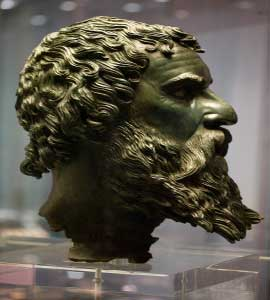

<div class="col-xs-12 col-sm-8 col-md-8 col-lg-6">
    <div class="row">
        <div class="book-pages-straight">
            <header class="title-head">
                <h1>Какво има в музея?</h1>
            </header>
            <section>
                <div class="row">
                    <div class="col-xs-12 col-md-12">
                        <h3>Маската на Тракийският цар Севт III (около 330 пр.н.е. - 300 пр.н.е.). <small>Той е последният голям владетел на Одриското царство.</small></h3>
                        
                    </div>
                </div>

                <div class="row">
                    <div class="col-xs-12 col-md-12">
                        <h4 class="text-center"><small>Долината на тракийските царе</small></h4>
                    </div>
                </div>

                <div class="row">
                    <div class="col-xs-12 col-md-12">
                        <h3>СЕВТ III</h3>
                        <p>Тракийски владетел от 330 пр.н.е. до 300 пр.н.е. и последният голям владетел на Одриското царство</p>
                        <p>След като обособява Одриското царство повече към централната Тракия, той построява своята столица Севтополис През 320 пр.н.е</p>
                    </div>
                </div>
            </section>
        </div>
        <div class="straight-cards"></div>
        <div class="cast-shadow hidden-xs"></div>
    </div>
</div>
